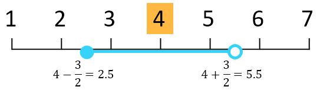
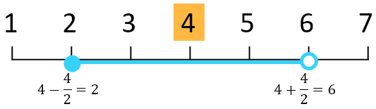
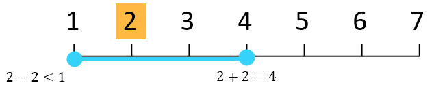
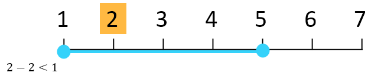

smoothdata
Smooth noisy data
Syntax
Description
B = smoothdata(A)A using a moving average.
smoothdata determines the moving window size from the
entries in A. The window slides down the length of the
vector, computing an average over the elements within each window.
If
Ais a matrix, thensmoothdatacomputes the moving average down each column ofA.If
Ais a multidimensional array, thensmoothdataoperates along the first dimension ofAwhose size does not equal 1.If
Ais a table or timetable with numeric variables, thensmoothdataoperates on each variable ofAseparately.
B = smoothdata(___,Name,Value)t is a vector of time values, then
smoothdata(A,"SamplePoints",t) smooths the data in
A relative to the times in t.
[ also returns the moving window size.B,winsize]
= smoothdata(___)
Alternative
You can use smoothdata functionality interactively by
adding the Smooth
Data task to a live script.

Examples
Create a vector containing noisy data, and smooth the data with a moving average.
x = 1:100;
rng(0,"twister")
A = cos(2*pi*0.05*x+2*pi*rand) + 0.5*randn(1,100);
B = smoothdata(A);Plot the original and smoothed data.
plot(x,A) hold on plot(x,B) legend("Input Data","Smoothed Data")

Create a matrix whose rows represent three noisy signals. Smooth the three signals using a moving average, and plot the smoothed data.
x = 1:100; rng(0,"twister") s1 = cos(2*pi*0.03*x+2*pi*rand) + 0.5*randn(1,100); s2 = cos(2*pi*0.04*x+2*pi*rand) + 0.4*randn(1,100) + 5; s3 = cos(2*pi*0.05*x+2*pi*rand) + 0.3*randn(1,100) - 5; A = [s1; s2; s3]; B = smoothdata(A,2); plot(x,B(1,:)) hold on plot(x,B(2,:)) plot(x,B(3,:)) legend("s1","s2","s3")

Smooth a vector of noisy data with a Gaussian-weighted moving average filter. Display the window size used by the filter.
x = 1:100; rng(0,"twister") A = cos(2*pi*0.05*x+2*pi*rand) + 0.5*randn(1,100); [B,winsize] = smoothdata(A,"gaussian"); winsize
winsize = 4
Smooth the original data with a larger window containing 20 elements. Plot the smoothed data for both window sizes.
C = smoothdata(A,"gaussian",20); plot(x,B) hold on plot(x,C) legend("Small Window","Large Window")

Create a noisy vector containing NaN values, and smooth the data ignoring NaN values.
rng(0,"twister")
A = [NaN randn(1,48) NaN randn(1,49) NaN];
B = smoothdata(A);Smooth the data including NaN values. The average in a window containing any NaN value is NaN.
C = smoothdata(A,"includenan");Plot the smoothed data in B and C.
plot(1:100,B,"-o") hold on plot(1:100,C,"-x") legend("Ignore Missing","Include Missing")

Create a vector of noisy data that corresponds to a time vector t. Smooth the data relative to the times in t, and plot the original data and the smoothed data.
x = 1:100; rng(0,"twister") A = cos(2*pi*0.05*x+2*pi*rand) + 0.5*randn(1,100); t = datetime(2017,1,1,0,0,0) + hours(0:99); B = smoothdata(A,"SamplePoints",t); plot(t,A) hold on plot(t,B) legend("Input Data","Smoothed Data")

Input Arguments
Name-Value Arguments
Output Arguments
More About
This table illustrates the window position across the default
uniformly spaced sample points vector [1 2 3 4 5 6 7].
Description | Window Size and Location | Sample Points in Window | Diagram |
|---|---|---|---|
For a scalar window size, the leading edge of the window is included and the trailing edge of the window is excluded. |
Current sample point = 4 | 3, 4, 5 |
 |
Current sample point = 4 | 2, 3, 4, 5 |
 | |
For a vector window size, the leading edge and the trailing edge are included. |
Current sample point = 4 | 2, 3, 4, 5, 6 |
|
For sample points near the endpoints of the input data, these moving statistic smoothing methods truncate the window so it begins at the first sample point or ends at the last sample point.
|
Current sample point = 2 | 1, 2, 3, 4 |
 |
For sample points near the endpoints of the input data, these local regression smoothing methods shift the window to include the first or last sample point.
|
Current sample point = 2 | 1, 2, 3, 4, 5 |
 |
![Given elements 1 to 7, if the current sample point is 4, then the corresponding window spans the range [2, 6].](movwindow_vector.png)
Algorithms
When the window size for the smoothing method is not specified, smoothdata computes
a default window size based on a heuristic. For a smoothing factor τ,
the heuristic estimates a moving average window size that attenuates
approximately 100*τ percent of the energy of the input data.
Extended Capabilities
Version History
Introduced in R2017aSee Also
Functions
smoothdata2|fillmissing|fillmissing2|movmean|movmedian|movmad|filter